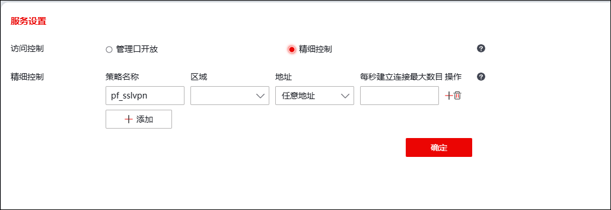
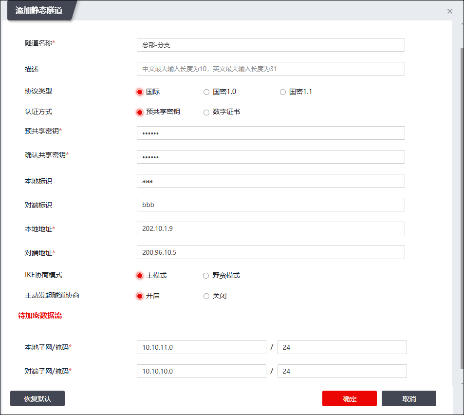

| 步骤1 | 选择 。 |
点击【添加】按钮，开放“外网”区域的IPSec VPN服务，如下图所示。

开放IPSecVPN服务的配置如下表所示。
设备 |
名称 |
区域 |
地址 |
|---|---|---|---|
防火墙A |
ipsec vpn |
外网 |
任意地址 |
防火墙B |
ipsec vpn |
外网 |
任意地址 |
| 步骤2 | 点击【确定】按钮完成ipsec vpn服务的开放。 |
| 步骤1 | 选择 。 |
点击【添加】，弹出“添加静态隧道”窗口，如下图所示。

参数 |
防火墙A |
防火墙B |
|---|---|---|
隧道名称 |
总部-分支 |
分支-总部 |
描述 |
填写对防火墙A的IPSecVPN简要描述，可省略。 |
填写对防火墙B的IPSecVPN简要描述，可省略。 |
认证方式（相同） |
预共享密钥 |
预共享密钥 |
预共享密钥（相同） |
123456 |
123456 |
本地标识 |
@aaa |
@bbb |
对方标识 |
@bbb |
@aaa |
本端接口 |
feth0 |
feth0 |
本地地址 |
202.10.1.9 |
200.96.10.5 |
对方地址 |
200.96.10.5 |
202.10.1.9 |
IKE协商模式（相同） |
主模式 |
主模式 |
主动发起隧道协商 |
开启 |
开启 |
本地子网/掩码 |
10.10.11.0/24 |
10.10.10.0/24 |
对端子网/掩码 |
10.10.10.0/24 |
10.10.11.0/24 |
IKE SA协商重试次数 |
默认 |
默认 |
ISAKMP-SA存活时间 |
默认 |
默认 |
ISAKMP-SA安全政策属性（相同） |
加密算法：AES 认证算法：MD5 DH算法：DH1 |
加密算法：AES 认证算法：MD5 DH算法：DH1 |
ESP加密算法（相同） |
加密算法：3DES |
加密算法：3DES |
ESP校验算法（相同） |
校验算法：MD5 |
校验算法：MD5 |
安全协议（相同） |
ESP |
ESP |
IPSec-SA存活时间 |
默认 |
默认 |
DPD |
开启 |
开启 |
DPD间隔 |
默认 |
默认 |
DPD超时时间 |
默认 |
默认 |
|
²防火墙A和防火墙B上表中标注“相同”的参数必须配置一致，否则隧道不能协商成功。 |

| 步骤2 | 点击【确定】按钮完成IPSec VPN静态隧道的配置。 |